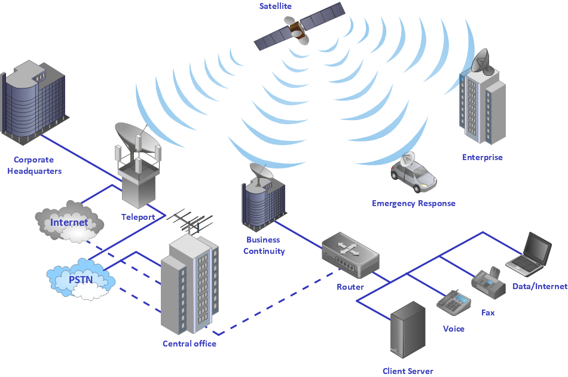

There are two types of Networking links are there:->
1.Wired Network Link
2.Wireless Network Link
1. Wired Network

The following classes of wired technologies are used in computer networking.
Coaxial cable is widely used for cable television systems, office buildings, and other work-sites for local area networks.
Transmission speed ranges from 200 million bits per second to more than 500 million bits per second.
ITU-T G.hn technology uses existing home wiring (coaxial cable, phone lines and power lines) to create a high-speed local area network.
Twisted pair cabling is used for wired Ethernet and other standards. It typically consists of 4 pairs of copper cabling that can be utilized
for both voice and data transmission. The use of two wires twisted together helps to reduce crosstalk and electromagnetic induction.
The transmission speed ranges from 2 Mbit/s to 10 Gbit/s. Twisted pair cabling comes in two forms: unshielded twisted pair (UTP)
and shielded twisted-pair (STP). Each form comes in several category ratings, designed for use in various scenarios.
An optical fiber is a glass fiber. It carries pulses of light that represent data via lasers and optical amplifiers.
Some advantages of optical fibers over metal wires are very low transmission loss and immunity to electrical interference.
Using dense wave division multiplexing, optical fibers can simultaneously carry multiple streams of data on different
wavelengths of light, which greatly increases the rate that data can be sent to up to trillions of bits per second.
Optic fibers can be used for long runs of cable carrying very high data rates, and are used for undersea cables to interconnect continents.
There are two basic types of fiber optics, single-mode optical fiber (SMF) and multi-mode optical fiber (MMF). Single-mode fiber has the
advantage of being able to sustain a coherent signal for dozens or even a hundred kilometers. Multimode fiber is cheaper to terminate but
is limited to a few hundred or even only a few dozens of meters, depending on the data rate and cable grade.
2. Wireless Network
Network connections can be established wirelessly using radio or other electromagnetic means of communication.
Terrestrial microwave :-
Terrestrial microwave communication uses Earth-based transmitters and receivers resembling satellite dishes.
Terrestrial microwaves are in the low gigahertz range, which limits all communications to line-of-sight. Relay stations are spaced approximately 40 miles (64 km) apart.
Communications satellites :-
Satellites also communicate via microwave. The satellites are stationed in space, typically in geosynchronous orbit 35,400 km (22,000 mi) above the equator.
These Earth-orbiting systems are capable of receiving and relaying voice, data, and TV signals.
Cellular networks :-
use several radio communications technologies. The systems divide the region covered into multiple geographic areas. Each area is served by a low-power transceiver.
Radio and spread spectrum technologies :-
Wireless LANs use a high-frequency radio technology similar to digital cellular. Wireless LANs use spread spectrum technology to enable
communication between multiple devices in a limited area. IEEE 802.11 defines a common flavor of open-standards wireless radio-wave technology known as Wi-Fi.
Free-space optical communication :-
uses visible or invisible light for communications. In most cases, line-of-sight propagation is used, which limits the physical positioning of communicating devices.
Extending the Internet to interplanetary dimensions via radio waves and optical means, the Interplanetary Internet.
IP over Avian Carriers was a humorous April fool's Request for Comments, issued as RFC 1149. It was implemented in real life in 2001.
The last two cases have a large round-trip delay time, which gives slow two-way communication but doesn't prevent sending large amounts of information (they can have high throughput).